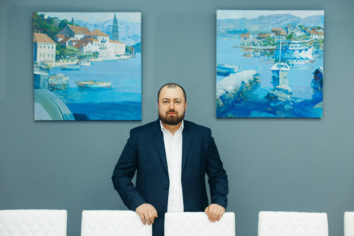
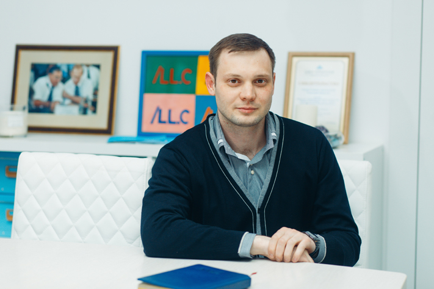

СМИ о Нас
Как защитить свой бизнес от уголовного преследования?
Вероятность оказаться на скамье подсудимых есть у каждого предпринимателя, какой бы кристальной честности он ни был. Просто потому, что бывают недобросовестные контрагенты, нечестные сотрудники, бывают конкуренты, готовые устранить соперника любой ценой. В конце концов, законы часто противоречат друг другу, и трактовать их можно двояко.
О том, как бизнесмену избежать уголовного преследования и что делать, если это все-таки произошло, нам рассказали юристы юридической фирмы «LL.C-Право» — управляющий партнер Дмитрий Лизунов и руководитель практики уголовно-правовой защиты бизнеса Антон Клочков.
Преодолевая стереотипы
Дмитрий Лизунов:
— Как руководитель фирмы скажу: уголовная практика может быть успешной только в том случае, если ее возглавляет специалист, имеющий опыт работы в госструктурах, так или иначе связанных с подобными правонарушениями. Тот, кто знает устройство правоохранительной системы, принципы ее работы, может предугадывать
У нас такой человек есть. Это Антон Клочков. В «LL.

Антон Клочков:
— До прихода в фирму я работал в отделе по расследованию организованной преступной деятельности в сфере экономики. Мы проводили расследование экономических преступлений, выявленных оперативниками ОБЭПа и направляли уголовные дела в суд. Так что с логикой нашей правоохранительной системы знаком не понаслышке.

— В крупных фирмах обычно есть свой юрист. Разве он не справится с функциями
А.К.: Задачи корпоративного юриста, как правило, заключаются в текущем сопровождении хозяйственной деятельности организации, проверке соблюдения договорных условий, представлении интересов компании в гражданских судах. Для уголовных дел своя специфика, и с ней корпоративный юрист, как правило, не знаком, либо знаком слабо.
Д.Л.: В нашей профессии, как и в любой другой, есть стереотип: если ты хороший юрист, значит, сможешь решить абсолютно любую проблему. Если плохой, то не сможешь. На самом деле это не так. Сейчас среди профессионалов во всем мире идет очень жесткая специализация. И успеха достигает тот, кто знает свое направление во всех нюансах и тонкостях.
Например, практика банкротства, на которой специализируюсь я, — это своя школа жизни. Уголовное право, являющееся специализацией Антона — это совершенно другие нормативные акты, другие способы коммуникации. Юрист, специализирующийся в гражданском праве, вряд ли будет успешен в уголовной практике.
— Какими особыми умениями должен обладать такой юрист?
Д.Л.: Умений требуется очень много. Да хотя бы правильно формулировать ответы на запросы. Например, в некоторых ситуациях прокуратура может запрашивать абсолютно любую информацию, касающуюся деятельности предприятия. Неискушенный человек может ответить на запрос так, что сотрудник правоохранительных органов получит еще больше материала для размышлений, в итоге это вполне может вылиться в обвинение по статье Уголовного кодекса. А можно дать исчерпывающий и однозначный ответ, который отсекает все варианты думать дальше. Антон владеет искусством такого ответа.
А.К.: Суть ответа может изменить всего одно слово — «вроде». Одно дело, когда ты однозначно отвечаешь: «Да, я помню или знал, что была такая ситуация,

Профилактика дешевле
— Правда ли, что во многих случаях можно вообще избежать уголовного преследования?
А.К.: Возбуждение уголовного дела — это последняя стадия, до которой лучше не доводить. Невозможно исключить риск того, что тот или иной бизнес попадет в поле внимания правоохранительных органов. Но можно минимизировать эти риски, увести их в сторону; либо заставить работать на себя.
Например, если речь идет об инвестиционных проектах с участием бюджета, то важно понимать, что в любом случае будут проверки. И чем крупнее бюджетные субсидии, тем больше внимания будет со стороны контролирующих органов. Важно, чтобы реакция на эти проверки человека, который отвечает за общение с госструктурами со стороны предприятия, была адекватна реальности, чтобы он был готов к любым вопросам и умел ответить на них честно, корректно и в рамках закона.
Д.Л.: К примеру, у нас много
— Как в этом может помочь юридическая фирма?
А.К.: Мы анализируем ситуацию с точки зрения уголовного права, проводим экспертизу документов на наличие уязвимых мест в том или ином контракте. При этом даем консультации: как лучше поступить, какие документы подготовить, чтобы не возникало проблем с законом.
Д.Л.: При этом мы не можем решать за клиента, как ему поступить. Наша задача — максимально раскрыть риски, чтобы руководитель фирмы не находился в иллюзиях, а понимал, что его ждет в том или ином случае. Все решения он принимает самостоятельно, но обладая всей полнотой информации.
Под защитой
— Если уголовное дело уже возбуждено, что остается делать? Чем вы можете помочь клиенту, обратившемуся к вам на этой стадии?
А.К.: Специфика экономических преступлений такова, что на одну и ту же ситуацию можно посмотреть с разных сторон. То, что с точки зрения гособвинителя может выглядеть как похищенные средства, с точки зрения предпринимателя — честный заработок. Наша задача — доказать государственной обвинительной машине правоту предпринимателя. То есть собрать как можно больше информации и документации, подтверждающей, что действия, которые инкриминируются подозреваемому, не носят криминогенного характера. Если же дело доходит до суда, нужно аргументированно доказать это судье.
— Как может быть две правды? Преступление или есть, или его нет.
А.К.: Преступление, в частности, экономическое, состоит из объективной и субъективной стороны. Как правило, объективная сторона определена, потому что это материальные ценности, поддающиеся исчислению. Субъективная сторона — это умысел, прямой или косвенный. Одну и ту же ситуацию сторона обвинения может считать преступлением, а сторона защиты — случайным стечением обстоятельств.
— Вы поможете клиенту «выйти сухим из воды» в любом случае?
А.К.: Конечно, нет. Бывают ситуации, когда все прекрасно понимают, что преступление доказано, и отрицать его смысла нет. Здесь мы можем в рамках

— Понимая, что человек совершил умышленное преступление, вы все равно возьметесь его защищать?
А.К.: Адвокат — это профессия, его обязанности прописаны в законе об адвокатуре и в кодексе профессиональной этики. Эту работу, как и любую другую, надо делать хорошо.
Д.Л.: Один из важнейших принципов нашей работы — служить нашим клиентам. В глобальном, человеческом смысле. К примеру, врач же не выбирает, кого лечить — злодея или праведника. Учитель не выбирает, кого учить — отличника или двоечника. Но каждый из них может сделать свою работу хорошо. А если он не просто делает работу бездумно, а служит, то и человек, выходя от хорошего врача или хорошего учителя, станет пусть немного, но лучше. Так же и с юристом. Даже в уголовной практике. Мы не берем на себя права моральной оценки, мы не судим — мы добросовестно делаем свою работу. В том числе для того, чтобы в будущем наш клиент не допускал ошибок, это очень важно.
— Возможно ли вести бизнес так честно и законно, чтобы у государства не было ни единого повода предъявить претензии? Наверное, тогда и к юристам обращаться не надо.
А.К.: В основном предприниматели так и делают: работают по закону. Большинство людей, которые ведут бизнес, с самого начала имеют самые конструктивные намерения. Но порой ситуация требует выбирать: либо отказаться от выгодного контракта, остановиться в развитии и в итоге уйти с рынка, либо согласиться с условиями, обрекая себя на риск понести административную или даже уголовную ответственность. Причем предприниматель может даже до конца не осознавать эти риски, что, впрочем, не освобождает его от ответственности и от наказания. Мы работаем в том числе для того, чтобы обозначить бизнесу все возможные риски и последствия тех или иных шагов.
Даже если дело будет прекращено или фигуранта оправдают по суду, сам процесс уже является большой помехой бизнесу. Ведь на период следствия из организации забирают первичную документацию, бухгалтерию, выносят компьютеры. Работа полностью парализуется на несколько месяцев. А клиенты ждать не будут: полгода простоя, и бизнес пропадает с рынка. Дабы не попадать в такие ситуации, лучше свести все риски к минимуму, причем делать это заранее.
— Это как, перед каждой сделкой обращаться к специалистам?
Д.Л.: В идеале, да. Те наши клиенты, которые это понимают, спрашивают у нас совета заранее, пока ничего еще не произошло. В итоге это окажется порой во много крат дешевле, чем если они попадут в неприятную историю.
Источник: Томский обзорДругие материалы этой темы
Быть успешным в праве
Объявлена запись на новый кампусный курс «Международные стандарты юридической практики» при Томском государственном университете. Сегодня это востребованное направление: кампусный курс — тот, который могут посещать все желающие вне зависимости от того, являются они студентами ТГУ, другого вуза ...
Екатерина Лизунова: «Те, кого мы берем на работу сегодня, через 20 лет будут руководить нашей фирмой»
При росте бизнеса неизбежно встает вопрос расширения штатов. Так происходит и с юридической фирмой «LL.
Федеральный юридический журнал Legal Insight публикует материал, посвященный курсу "Международные стандарты юридических практик" (соавтор и преподаватель курса - управляющий партнер "LL.C-Право" Дмитрий Лизунов).
Источник:
Федеральный интерес
Источник: